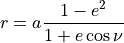
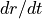
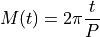
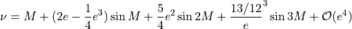

Solar System Geometries¶
The positions of each body relative to another is handled with the SSObject
object combined with a Geometry object.
Sun frame: x-axis points toward perihelion, y-axis points toward TAA=90º, z-axis points along planet rotational axis. Origin = Solar center
Planet frame: x-axis points toward Sun, y-axis points toward dusk, z-axis points along rotational axis. Origin = Planet center.
Moon frame: x-axis points toward Sun, y-axis points toward dusk, z-axis points along rotational axis. Origin = Moon center.
Computing Distance and Radial Velocity of a Planet Relative to the Sun¶
The distance from the central body as a function of true anomaly is given by:

where r is the distance from the central body, a is the semi-major axis of the orbit, e is the eccentriciy, and ν is the true anomaly.
To calculate the , the radial velocity relative to the central body, it is necessary to determine the mean anomaly from the true anomaly as the true anomaly does not increase at a constant rate. The mean anomaly, M does increase at a constant rate. The mean anomaly as a function of time is simply

where P is the planet’s orbital period. The true anomaly can be approximated from the mean anomaly with:G

This allows one to compute using the equation for r above.
A comparison of distance and radial velocity relative to the Sun computed using the above equations and retrieved from JPL Horizons for Mercury, Earth, Jupiter and Saturn are shown here: